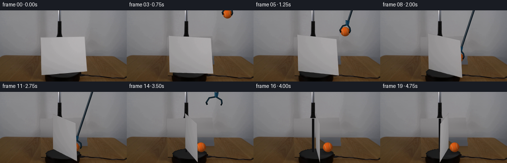
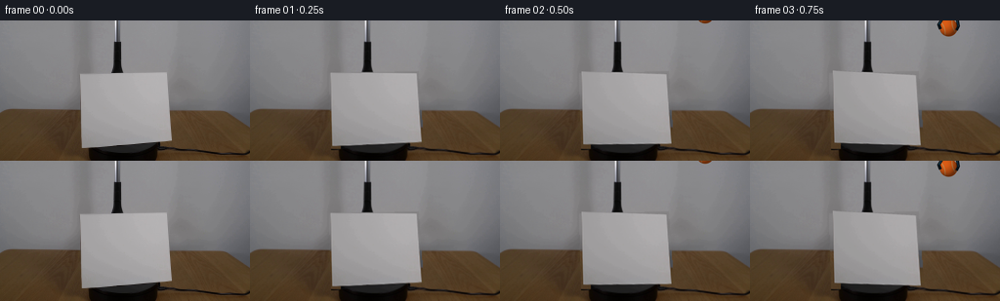
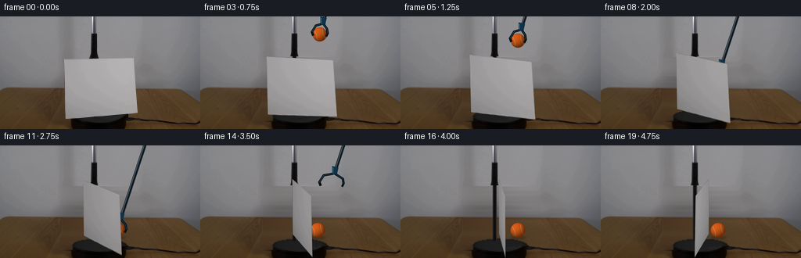
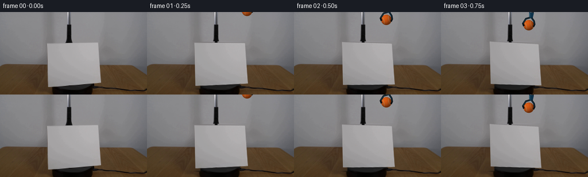
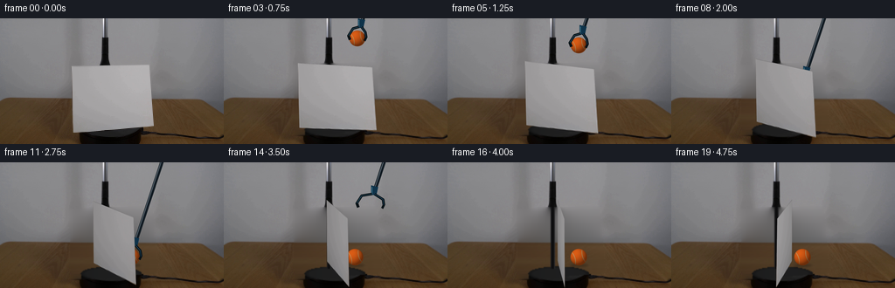
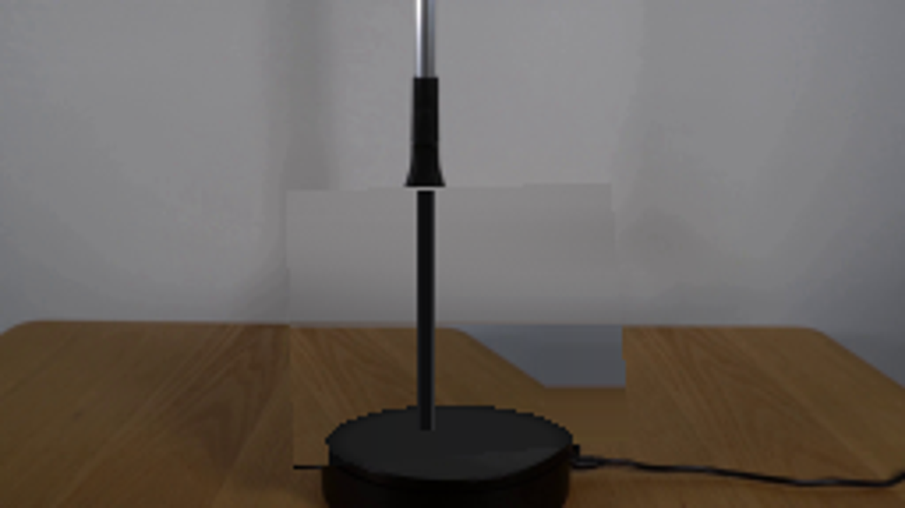
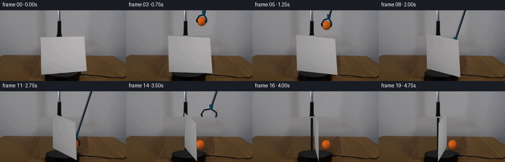
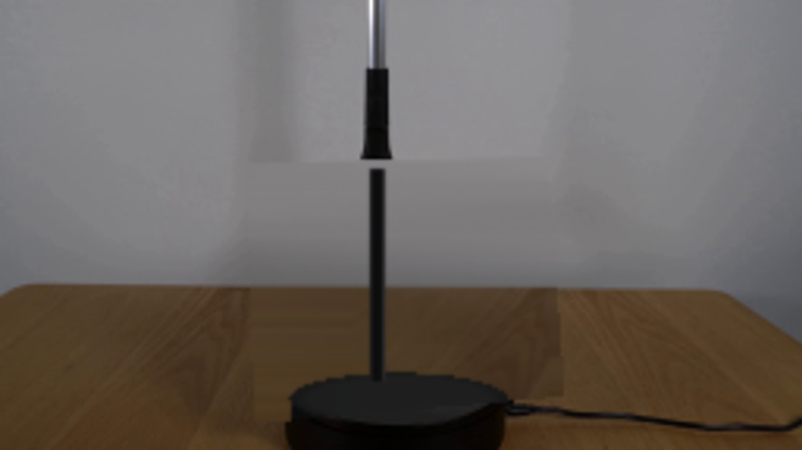
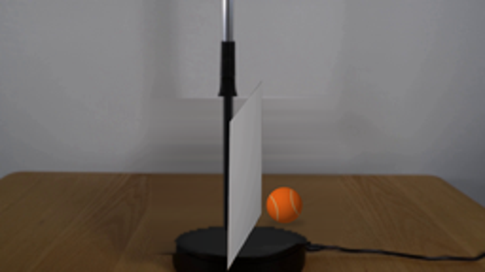

CODING AGENTS AS PIXEL WORLD MODELS
traex/GPT-6.1-Sol · 0005
点击播放 · 原生 RGB 像素
逐轮保存的候选
回放视频、检查图与代码变化。
每份候选均可单独播放。实际图片检查记录在下方工具轨迹中。
候选 01播放与检查图
点击播放 · 原生 RGB 像素

展开代码变化
--- 上一保存版本
+++ 本次保存版本
@@ -0,0 +1,181 @@
+from pathlib import Path
+import numpy as np
+import cv2
+from PIL import Image, ImageDraw, ImageFilter
+import artifact_io
+
+ROOT = Path(__file__).resolve().parent
+S=4
+W,H=256,144
+rng = np.random.default_rng(4539)
+original = np.array(Image.open(ROOT/'first_frame.png').convert('RGB'))
+quad = np.array([[81.8,54.7],[170.6,52.9],[175.5,123.4],[83.8,130.7]],np.float32)
+Y,X = np.mgrid[0:H,0:W]
+
+# Reconstruct only surfaces hidden by the initial screen, from local image samples.
+bg = original.astype(np.float32).copy()
+mask = np.zeros((H,W),np.uint8)
+cv2.fillConvexPoly(mask,np.rint(quad).astype(np.int32),255)
+mask=cv2.dilate(mask,np.ones((3,3),np.uint8))
+for y in range(51,H):
+ xs=np.flatnonzero(mask[y]>0)
+ if not len(xs):continue
+ if y<92:
+ left=original[y,74:79].mean(0).astype(float)
+ right=original[y,180:185].mean(0).astype(float)
+ u=np.clip((xs-78)/103,0,1)
+ vals=left[None,:]*(1-u[:,None])+right[None,:]*u[:,None]
+ # Broad illumination behind the apparatus, with photographic fine noise.
+ vals+=6*np.sin(u[:,None]*np.pi)
+ vals+=rng.normal(0,.33,(len(xs),1))
+ else:
+ # Same wood surface, reconstructed using grain visible alongside the screen.
+ sourcex=np.clip(xs+101,179,255)
+ vals=original[y,sourcex].astype(float)
+ vals-=np.array([7,5,3])[None,:]*np.exp(-((xs[:,None]-123)/40)**2)
+ bg[y,xs]=vals
+
+# A low black circular turntable: keep all its originally visible surface.
+occ=(mask>0)
+base_top=((X-126.7)/34.8)**2+((Y-124.7)/10.4)**2 <=1
+front=(X>=92)&(X<=161)&(Y>=124.7)&(((X-126.7)/34.8)**2+((Y-139.1)/9.0)**2<=1)
+front |= ((X>=93)&(X<=161)&(Y>=126)&(Y<139))
+for y,x in zip(*np.where(occ & front)):
+ c=11+5*np.exp(-((x-128)/20)**2)+2*np.exp(-((y-134)/3)**2)
+ bg[y,x]=[c*.93,c*.93,c*.94]
+for y,x in zip(*np.where(occ & base_top)):
+ radial=((x-126.7)/34.8)**2+((y-124.7)/10.4)**2
+ c=29.5-9*max(0,(radial-.68)/.32)+1.5*np.sin((x-99)*.045)
+ bg[y,x]=[c*.99,c,c*1.005]
+# The stationary support hidden by the panel.
+for y in range(54,122):
+ for x in range(118,123):
+ if occ[y,x]:
+ bg[y,x]=([26,26,28] if x==118 else [13,13,14] if x<122 else [43,43,45])
+background = Image.fromarray(np.uint8(np.clip(bg,0,255))).resize((W*S,H*S),Image.Resampling.BICUBIC)
+background.save(ROOT/'.tmp/background.png')
+
+# Paper texture is sampled from the actual first image, including soft uneven lighting.
+tw,th=360,304
+rect=np.array([[0,0],[tw-1,0],[tw-1,th-1],[0,th-1]],np.float32)
+hom=cv2.getPerspectiveTransform(quad,rect)
+tex=cv2.warpPerspective(original,hom,(tw,th),flags=cv2.INTER_CUBIC).astype(np.float32)
+tex=cv2.GaussianBlur(tex,(3,3),.45)
+
+pitch=.31
+V=np.array([0,-np.cos(pitch),-np.sin(pitch)])
+N=np.array([0,-np.sin(pitch),np.cos(pitch)])
+F=500.
+P=np.array([(129.65-128)*600/F,(127.05-72)*600/F,600.])
+card3=[]
+for px,py in quad:
+ h=(P[1]-(py-72)*600/F)/(np.cos(pitch)-(py-72)*np.sin(pitch)/F)
+ depth=600-np.sin(pitch)*h
+ x=(px-128)*depth/F-P[0]
+ card3.append((x,h))
+
+def polygon_at(angle):
+ out=[]
+ for x,h in card3:
+ point=P+np.array([x*np.cos(angle),0,0])+V*h-N*x*np.sin(angle)
+ out.append([128+F*point[0]/point[2],72+F*point[1]/point[2]])
+ return np.array(out,np.float32)
+
+def overlay(im,layer):
+ return Image.alpha_composite(im.convert('RGBA'),layer.convert('RGBA')).convert('RGB')
+
+def draw_ball(im,cx,cy,r,angle):
+ layer=np.zeros((H*S,W*S,4),np.uint8)
+ yy,xx=np.mgrid[0:H*S,0:W*S]
+ u=(xx/S-cx)/r; v=(yy/S-cy)/r
+ rr=u*u+v*v; zz=np.sqrt(np.clip(1-rr,0,1))
+ a=np.clip((1-np.sqrt(rr))*r*S+.5,0,1)
+ light=np.clip(-.43*u-.48*v+.76*zz,0,1)
+ shade=.49+.51*light
+ noise=rng.normal(0,1.9,(H*S,W*S))
+ color=np.stack([220*shade+noise,93*shade+noise*.8,22*shade+noise*.55],axis=-1)
+ # The seam follows two curves on the sphere rather than a flat painted ellipse.
+ ux=u*np.cos(angle)-v*np.sin(angle)
+ vy=u*np.sin(angle)+v*np.cos(angle)
+ seam_distance=np.abs(np.abs(ux)-(.46+.29*vy*vy))
+ seam=np.exp(-(seam_distance/.040)**2)*np.clip(zz*2,0,1)
+ seamcolor=np.stack([191*shade,166*shade,114*shade],axis=-1)
+ color=color*(1-seam[...,None]*.92)+seamcolor*seam[...,None]*.92
+ layer[:,:,:3]=np.uint8(np.clip(color,0,255));layer[:,:,3]=np.uint8(a*255)
+ return overlay(im,Image.fromarray(layer))
+
+def draw_tool(im,cx,cy,r,open_amount=0):
+ layer=Image.new('RGBA',im.size,(0,0,0,0)); d=ImageDraw.Draw(layer)
+ def line(points,fill,width):d.line([(int(x*S),int(y*S)) for x,y in points], fill=fill,width=max(1,int(width*S)),joint='curve')
+ def poly(points,fill):d.polygon([(int(x*S),int(y*S)) for x,y in points], fill=fill)
+ # Long two-tone shaft enters from above-right, terminating in rubber-lined jaws.
+ hinge=(cx+5.5,cy-r-10)
+ top=(hinge[0]+33,hinge[1]-100)
+ line([top,hinge],(23,31,37,255),4.1)
+ line([(top[0]-.85,top[1]),(hinge[0]-.85,hinge[1])],(81,94,104,255),1.2)
+ line([(top[0]+.95,top[1]),(hinge[0]+.95,hinge[1])],(15,25,34,255),1.1)
+ # Blue actuator housing.
+ poly([(cx+1,cy-r-14),(cx+9,cy-r-12),(cx+7,cy-r-3),(cx+1,cy-r-3)],(15,51,74,255))
+ line([(cx+2,cy-r-12),(cx+2,cy-r-4)],(49,99,121,255),1.4)
+ # Opposed curved black fingers wrap around the upper hemisphere.
+ left=[(cx+2,cy-r-4),(cx-5-open_amount,cy-r-2),(cx-r-1-open_amount,cy-3),(cx-r+.8-open_amount,cy+1.8)]
+ right=[(cx+5,cy-r-4),(cx+r+open_amount,cy-r+2),(cx+r+1+open_amount,cy-1),(cx+r-1+open_amount,cy+3)]
+ line(left,(10,17,21,255),3.1);line(right,(9,17,22,255),3.0)
+ line(left[:-1],(30,61,77,255),1.0)
+ line(right[:-1],(26,61,82,255),.9)
+ return overlay(im,layer)
+
+frames=[original.copy()]
+for i in range(1,20):
+ t=i/4
+ # Clockwise turn about the platform's vertical spindle.
+ angle=np.deg2rad(21.3*t)
+ q=polygon_at(angle)
+ im=background.copy()
+ # Motion is deliberately smooth and real-time: approach, set down, release, withdraw.
+ if t<2.55:
+ u=np.clip((t-.08)/2.47,0,1)
+ e=u*u*(3-2*u)
+ cx=215-65*e; cy=-16+128*e
+ r=9.1+.7*e
+ placed=False
+ else:
+ cx,cy,r=150,112,9.8
+ placed=True
+ # Soft contact shadow appears as the ball reaches the wood.
+ if cy>94:
+ sl=Image.new('RGBA',im.size,(0,0,0,0));sd=ImageDraw.Draw(sl)
+ alpha=int(63*np.clip((cy-94)/18,0,1))
+ sd.ellipse(((cx-10)*S,119.2*S,(cx+11)*S,125*S),fill=(8,5,2,alpha))
+ sl=sl.filter(ImageFilter.GaussianBlur(1.1*S));im=overlay(im,sl)
+ if t>=.25:
+ im=draw_ball(im,cx,cy,r,.27)
+ if t<2.85:
+ im=draw_tool(im,cx,cy,r,max(0,(t-2.55)*17))
+ elif t<4.5:
+ u=np.clip((t-2.85)/1.2,0,1)
+ e=u*u*(3-2*u)
+ tcx=150+47*e;tcy=112-156*e
+ im=draw_tool(im,tcx,tcy,r,5)
+ # Dark, subtle edge reveals cardstock thickness when it turns side-on.
+ edge=Image.new('RGBA',im.size,(0,0,0,0));ed=ImageDraw.Draw(edge)
+ ed.polygon([(float(x*S+.5),float(y*S)) for x,y in q],fill=(94,93,93,255))
+ im=overlay(im,edge)
+ # Rotating paper still uses the camera's original surface, not flat white paint.
+ brightness=.985-.17*np.sin(angle)**1.4
+ if angle>np.pi/2:
+ brightness=.86
+ paper=np.uint8(np.clip(tex*brightness,0,255))
+ M=cv2.getPerspectiveTransform(rect,(q*S).astype(np.float32))
+ warped=cv2.warpPerspective(paper,M,(W*S,H*S),flags=cv2.INTER_CUBIC,borderMode=cv2.BORDER_REPLICATE)
+ pm=np.zeros((H*S,W*S),np.uint8)
+ cv2.fillConvexPoly(pm,np.rint(q*S).astype(np.int32),255,lineType=cv2.LINE_AA)
+ # Original pole is behind the panel, and is occluded naturally by the turning card.
+ a=pm.astype(np.float32)/255
+ arr=np.array(im).astype(np.float32)
+ arr=arr*(1-a[...,None])+warped*a[...,None]
+ im=Image.fromarray(np.uint8(np.clip(arr,0,255)))
+ im=im.resize((W,H),Image.Resampling.LANCZOS)
+ frames.append(np.array(im))
+frames=np.stack(frames).astype(np.uint8)
+artifact_io.save(frames,ROOT)
候选 02播放与检查图
点击播放 · 原生 RGB 像素


展开代码变化
--- 上一保存版本
+++ 本次保存版本
@@ -16,35 +16,33 @@
bg = original.astype(np.float32).copy()
mask = np.zeros((H,W),np.uint8)
cv2.fillConvexPoly(mask,np.rint(quad).astype(np.int32),255)
-mask=cv2.dilate(mask,np.ones((3,3),np.uint8))
-for y in range(51,H):
+mask=cv2.dilate(mask,np.ones((7,7),np.uint8))
+for y in range(49,H):
xs=np.flatnonzero(mask[y]>0)
if not len(xs):continue
if y<92:
- left=original[y,74:79].mean(0).astype(float)
- right=original[y,180:185].mean(0).astype(float)
- u=np.clip((xs-78)/103,0,1)
+ xl=max(0,int(xs[0])-1); xr=min(W-1,int(xs[-1])+1)
+ left=original[y,max(0,xl-2):xl+1].mean(0).astype(float)
+ right=original[y,xr:min(W,xr+3)].mean(0).astype(float)
+ u=np.clip((xs-xl)/(xr-xl),0,1)
vals=left[None,:]*(1-u[:,None])+right[None,:]*u[:,None]
- # Broad illumination behind the apparatus, with photographic fine noise.
- vals+=6*np.sin(u[:,None]*np.pi)
- vals+=rng.normal(0,.33,(len(xs),1))
+ vals+=rng.normal(0,.25,(len(xs),1))
else:
- # Same wood surface, reconstructed using grain visible alongside the screen.
- sourcex=np.clip(xs+101,179,255)
+ sourcex=np.clip(xs-100,12,75)
vals=original[y,sourcex].astype(float)
- vals-=np.array([7,5,3])[None,:]*np.exp(-((xs[:,None]-123)/40)**2)
+ vals-=np.array([5,4,2])[None,:]*np.exp(-((xs[:,None]-123)/40)**2)
bg[y,xs]=vals
# A low black circular turntable: keep all its originally visible surface.
occ=(mask>0)
-base_top=((X-126.7)/34.8)**2+((Y-124.7)/10.4)**2 <=1
+base_top=((X-126.7)/34.8)**2+((Y-127.1)/8.2)**2 <=1
front=(X>=92)&(X<=161)&(Y>=124.7)&(((X-126.7)/34.8)**2+((Y-139.1)/9.0)**2<=1)
front |= ((X>=93)&(X<=161)&(Y>=126)&(Y<139))
for y,x in zip(*np.where(occ & front)):
c=11+5*np.exp(-((x-128)/20)**2)+2*np.exp(-((y-134)/3)**2)
bg[y,x]=[c*.93,c*.93,c*.94]
for y,x in zip(*np.where(occ & base_top)):
- radial=((x-126.7)/34.8)**2+((y-124.7)/10.4)**2
+ radial=((x-126.7)/34.8)**2+((y-127.1)/8.2)**2
c=29.5-9*max(0,(radial-.68)/.32)+1.5*np.sin((x-99)*.045)
bg[y,x]=[c*.99,c,c*1.005]
# The stationary support hidden by the panel.
@@ -52,6 +50,8 @@
for x in range(118,123):
if occ[y,x]:
bg[y,x]=([26,26,28] if x==118 else [13,13,14] if x<122 else [43,43,45])
+smoothed=cv2.GaussianBlur(bg,(3,3),.55)
+bg[occ]=smoothed[occ]
background = Image.fromarray(np.uint8(np.clip(bg,0,255))).resize((W*S,H*S),Image.Resampling.BICUBIC)
background.save(ROOT/'.tmp/background.png')
@@ -133,29 +133,30 @@
q=polygon_at(angle)
im=background.copy()
# Motion is deliberately smooth and real-time: approach, set down, release, withdraw.
- if t<2.55:
- u=np.clip((t-.08)/2.47,0,1)
+ if t<1.0:
+ u=np.clip(t/1.,0,1)
+ e=1-(1-u)**2
+ cx=193-43*e;cy=-24+50*e;r=9.1
+ elif t<2.7:
+ u=np.clip((t-1.0)/1.7,0,1)
e=u*u*(3-2*u)
- cx=215-65*e; cy=-16+128*e
- r=9.1+.7*e
- placed=False
+ cx=150; cy=26+82.5*e;r=9.1+.4*e
else:
- cx,cy,r=150,112,9.8
- placed=True
+ cx,cy,r=150,108.5,9.5
# Soft contact shadow appears as the ball reaches the wood.
if cy>94:
sl=Image.new('RGBA',im.size,(0,0,0,0));sd=ImageDraw.Draw(sl)
alpha=int(63*np.clip((cy-94)/18,0,1))
- sd.ellipse(((cx-10)*S,119.2*S,(cx+11)*S,125*S),fill=(8,5,2,alpha))
+ sd.ellipse(((cx-10)*S,116*S,(cx+11)*S,120.2*S),fill=(8,5,2,alpha))
sl=sl.filter(ImageFilter.GaussianBlur(1.1*S));im=overlay(im,sl)
if t>=.25:
im=draw_ball(im,cx,cy,r,.27)
- if t<2.85:
- im=draw_tool(im,cx,cy,r,max(0,(t-2.55)*17))
+ if t<3.0:
+ im=draw_tool(im,cx,cy,r,max(0,(t-2.7)*17))
elif t<4.5:
- u=np.clip((t-2.85)/1.2,0,1)
+ u=np.clip((t-3.0)/1.2,0,1)
e=u*u*(3-2*u)
- tcx=150+47*e;tcy=112-156*e
+ tcx=150+47*e;tcy=108.5-156*e
im=draw_tool(im,tcx,tcy,r,5)
# Dark, subtle edge reveals cardstock thickness when it turns side-on.
edge=Image.new('RGBA',im.size,(0,0,0,0));ed=ImageDraw.Draw(edge)
候选 03播放与检查图

候选 04播放与检查图
点击播放 · 原生 RGB 像素


展开代码变化
--- 上一保存版本
+++ 本次保存版本
@@ -1,6 +1,7 @@
from pathlib import Path
import numpy as np
import cv2
+from scipy.interpolate import CubicSpline
from PIL import Image, ImageDraw, ImageFilter
import artifact_io
@@ -25,12 +26,20 @@
left=original[y,max(0,xl-2):xl+1].mean(0).astype(float)
right=original[y,xr:min(W,xr+3)].mean(0).astype(float)
u=np.clip((xs-xl)/(xr-xl),0,1)
+ knot=np.array([xl-12,xl,xr,xr+12])
+ knot=np.clip(knot,0,255)
+ knotvals=np.array([original[y,max(0,int(k)-1):min(256,int(k)+2)].mean(0) for k in knot])
+ vals=CubicSpline(knot,knotvals,axis=0,bc_type='natural')(xs)
+ vals+=rng.normal(0,.23,(len(xs),1))
+ else:
+ xl=max(0,int(xs[0])-1);xr=min(W-1,int(xs[-1])+1)
+ u=np.clip((xs-xl)/(xr-xl),0,1)
+ left=original[y,max(0,xl-2):xl+1].mean(0).astype(float)
+ right=original[y,xr:min(W,xr+3)].mean(0).astype(float)
+ sourcex=np.clip(np.rint(15+u*55).astype(int),15,70)
+ grain=original[y,sourcex].astype(float)-cv2.GaussianBlur(original.astype(np.float32),(9,5),1.4)[y,sourcex]
vals=left[None,:]*(1-u[:,None])+right[None,:]*u[:,None]
- vals+=rng.normal(0,.25,(len(xs),1))
- else:
- sourcex=np.clip(xs-100,12,75)
- vals=original[y,sourcex].astype(float)
- vals-=np.array([5,4,2])[None,:]*np.exp(-((xs[:,None]-123)/40)**2)
+ vals+=grain*.9*np.sin(np.pi*u[:,None])
bg[y,xs]=vals
# A low black circular turntable: keep all its originally visible surface.
@@ -46,7 +55,7 @@
c=29.5-9*max(0,(radial-.68)/.32)+1.5*np.sin((x-99)*.045)
bg[y,x]=[c*.99,c,c*1.005]
# The stationary support hidden by the panel.
-for y in range(54,122):
+for y in range(50,122):
for x in range(118,123):
if occ[y,x]:
bg[y,x]=([26,26,28] if x==118 else [13,13,14] if x<122 else [43,43,45])
@@ -163,7 +172,7 @@
ed.polygon([(float(x*S+.5),float(y*S)) for x,y in q],fill=(94,93,93,255))
im=overlay(im,edge)
# Rotating paper still uses the camera's original surface, not flat white paint.
- brightness=.985-.17*np.sin(angle)**1.4
+ brightness=1-.17*np.sin(angle)**1.4
if angle>np.pi/2:
brightness=.86
paper=np.uint8(np.clip(tex*brightness,0,255))
候选 05播放与检查图
点击播放 · 原生 RGB 像素

展开代码变化
--- 上一保存版本
+++ 本次保存版本
@@ -2,6 +2,8 @@
import numpy as np
import cv2
from scipy.interpolate import CubicSpline
+from scipy.sparse import lil_matrix
+from scipy.sparse.linalg import spsolve
from PIL import Image, ImageDraw, ImageFilter
import artifact_io
@@ -18,7 +20,7 @@
mask = np.zeros((H,W),np.uint8)
cv2.fillConvexPoly(mask,np.rint(quad).astype(np.int32),255)
mask=cv2.dilate(mask,np.ones((7,7),np.uint8))
-for y in range(49,H):
+for y in range(47,H):
xs=np.flatnonzero(mask[y]>0)
if not len(xs):continue
if y<92:
@@ -41,6 +43,24 @@
vals=left[None,:]*(1-u[:,None])+right[None,:]*u[:,None]
vals+=grain*.9*np.sin(np.pi*u[:,None])
bg[y,xs]=vals
+
+# Harmonic continuation of the wall removes cutout seams while preserving the
+# original soft lighting at every exposed boundary of the screen.
+wm=(mask>0)&(Y<91)
+coords=np.argwhere(wm)
+index=np.full((H,W),-1,np.int32)
+for k,(yy,xx) in enumerate(coords): index[yy,xx]=k
+A=lil_matrix((len(coords),len(coords)),dtype=np.float64)
+b=np.zeros((len(coords),3))
+for k,(yy,xx) in enumerate(coords):
+ A[k,k]=4
+ for dy,dx in ((-1,0),(1,0),(0,-1),(0,1)):
+ ny,nx=yy+dy,xx+dx
+ j=index[ny,nx]
+ if j>=0:A[k,j]=-1
+ else:b[k]+=bg[ny,nx]
+solution=spsolve(A.tocsr(),b)
+bg[coords[:,0],coords[:,1]]=solution
# A low black circular turntable: keep all its originally visible surface.
occ=(mask>0)
可观测工具轨迹
实际执行的命令与返回图片。
命令 1exit 0
/bin/bash -lc "ls -la && cat prompt.txt && printf '\\n---RULES---\\n' && cat GENERATION_RULES.md"
命令 2exit 0
/bin/bash -lc "cat artifact_io.py && python - <<'PY'
from PIL import Image
im=Image.open('first_frame.png');print(im.size);im.resize((1024,576)).save('.tmp/enlarged.png')
PY"命令 3exit 0
/bin/bash -lc "python - <<'PY'
import numpy as np
from PIL import Image
im=np.array(Image.open('first_frame.png'))
for y in (10,30,50,60,70,80,90,95,100,110,120,125,130,135):
print(y,[(x,im[y,x].tolist()) for x in (75,80,81,85,115,120,170,175,180)])
PY"命令 4exit 0
/bin/bash -lc "python - <<'PY' import importlib.util for x in ['cv2','scipy','numpy','PIL']: print(x,bool(importlib.util.find_spec(x))) PY"
命令 5exit 0
/bin/bash -lc "cat > .tmp/fit.py <<'PY'
import numpy as np
from scipy.optimize import least_squares
corn=np.array([[81.8,54.7],[170.6,52.9],[175.5,123.4],[83.8,130.7]])
def proj(p,angle=0):
w,h,pitch,yaw,cx,cy,roll=p
u=np.array([-.5,.5,.5,-.5]); y=np.array([h,h,0,0])
x=w*u*np.cos(yaw+angle);z=w*u*np.sin(yaw+angle)
den=600+np.cos(pitch)*z-np.sin(pitch)*y
X=500*x/den;Y=500*(-np.sin(pitch)*z-np.cos(pitch)*y)/den
return np.column_stack([X*np.cos(roll)-Y*np.sin(roll)+cx,X*np.sin(roll)+Y*np.cos(roll)+cy])
p0=[110,87,.4,.3,128,127,-.02]
r=least_squares(lambda p:(proj(p)-corn).ravel(),p0,max_nfev=10000)
print(r.x);print(proj(r.x));print('err',r.cost)
for a in [0,-20,-40,-60,-80,-100]: print(a,proj(r.x,np.deg2rad(a)))
PY
python .tmp/fit.py"命令 6exit 0
/bin/bash -lc "cat > generate.py <<'PY'
from pathlib import Path
import numpy as np
import cv2
from PIL import Image, ImageDraw, ImageFilter
import artifact_io
ROOT = Path(__file__).resolve().parent
S=4
W,H=256,144
rng = np.random.default_rng(4539)
original = np.array(Image.open(ROOT/'first_frame.png').convert('RGB'))
quad = np.array([[81.8,54.7],[170.6,52.9],[175.5,123.4],[83.8,130.7]],np.float32)
Y,X = np.mgrid[0:H,0:W]
# Reconstruct only surfaces hidden by the initial screen, from local image samples.
bg = original.astype(np.float32).copy()
mask = np.zeros((H,W),np.uint8)
cv2.fillConvexPoly(mask,np.rint(quad).astype(np.int32),255)
mask=cv2.dilate(mask,np.ones((3,3),np.uint8))
for y in range(51,H):
xs=np.flatnonzero(mask[y]>0)
if not len(xs):continue
if y<92:
left=original[y,74:79].mean(0).astype(float)
right=original[y,180:185].mean(0).astype(float)
u=np.clip((xs-78)/103,0,1)
vals=left[None,:]*(1-u[:,None])+right[None,:]*u[:,None]
# Broad illumination behind the apparatus, with photographic fine noise.
vals+=6*np.sin(u[:,None]*np.pi)
vals+=rng.normal(0,.33,(len(xs),1))
else:
# Same wood surface, reconstructed using grain visible alongside the screen.
sourcex=np.clip(xs+101,179,255)
vals=original[y,sourcex].astype(float)
vals-=np.array([7,5,3])[None,:]*np.exp(-((xs[:,None]-123)/40)**2)
bg[y,xs]=vals
# A low black circular turntable: keep all its originally visible surface.
occ=(mask>0)
base_top=((X-126.7)/34.8)**2+((Y-124.7)/10.4)**2 <=1
front=(X>=92)&(X<=161)&(Y>=124.7)&(((X-126.7)/34.8)**2+((Y-139.1)/9.0)**2<=1)
front |= ((X>=93)&(X<=161)&(Y>=126)&(Y<139))
for y,x in zip(*np.where(occ & front)):
c=11+5*np.exp(-((x-128)/20)**2)+2*np.exp(-((y-134)/3)**2)
bg[y,x]=[c*.93,c*.93,c*.94]
for y,x in zip(*np.where(occ & base_top)):
radial=((x-126.7)/34.8)**2+((y-124.7)/10.4)**2
c=29.5-9*max(0,(radial-.68)/.32)+1.5*np.sin((x-99)*.045)
bg[y,x]=[c*.99,c,c*1.005]
# The stationary support hidden by the panel.
for y in range(54,122):
for x in range(118,123):
if occ[y,x]:
bg[y,x]=([26,26,28] if x==118 else [13,13,14] if x<122 else [43,43,45])
background = Image.fromarray(np.uint8(np.clip(bg,0,255))).resize((W*S,H*S),Image.Resampling.BICUBIC)
background.save(ROOT/'.tmp/background.png')
# Paper texture is sampled from the actual first image, including soft uneven lighting.
tw,th=360,304
rect=np.array([[0,0],[tw-1,0],[tw-1,th-1],[0,th-1]],np.float32)
hom=cv2.getPerspectiveTransform(quad,rect)
tex=cv2.warpPerspective(original,hom,(tw,th),flags=cv2.INTER_CUBIC).astype(np.float32)
tex=cv2.GaussianBlur(tex,(3,3),.45)
pitch=.31
V=np.array([0,-np.cos(pitch),-np.sin(pitch)])
N=np.array([0,-np.sin(pitch),np.cos(pitch)])
F=500.
P=np.array([(129.65-128)*600/F,(127.05-72)*600/F,600.])
card3=[]
for px,py in quad:
h=(P[1]-(py-72)*600/F)/(np.cos(pitch)-(py-72)*np.sin(pitch)/F)
depth=600-np.sin(pitch)*h
x=(px-128)*depth/F-P[0]
card3.append((x,h))
def polygon_at(angle):
out=[]
for x,h in card3:
point=P+np.array([x*np.cos(angle),0,0])+V*h-N*x*np.sin(angle)
out.append([128+F*point[0]/point[2],72+F*point[1]/point[2]])
return np.array(out,np.float32)
def overlay(im,layer):
return Image.alpha_composite(im.convert('RGBA'),layer.convert('RGBA')).convert('RGB')
def draw_ball(im,cx,cy,r,angle):
layer=np.zeros((H*S,W*S,4),np.uint8)
yy,xx=np.mgrid[0:H*S,0:W*S]
u=(xx/S-cx)/r; v=(yy/S-cy)/r
rr=u*u+v*v; zz=np.sqrt(np.clip(1-rr,0,1))
a=np.clip((1-np.sqrt(rr))*r*S+.5,0,1)
light=np.clip(-.43*u-.48*v+.76*zz,0,1)
shade=.49+.51*light
noise=rng.normal(0,1.9,(H*S,W*S))
color=np.stack([220*shade+noise,93*shade+noise*.8,22*shade+noise*.55],axis=-1)
# The seam follows two curves on the sphere rather than a flat painted ellipse.
ux=u*np.cos(angle)-v*np.sin(angle)
vy=u*np.sin(angle)+v*np.cos(angle)
seam_distance=np.abs(np.abs(ux)-(.46+.29*vy*vy))
seam=np.exp(-(seam_distance/.040)**2)*np.clip(zz*2,0,1)
seamcolor=np.stack([191*shade,166*shade,114*shade],axis=-1)
color=color*(1-seam[...,None]*.92)+seamcolor*seam[...,None]*.92
layer[:,:,:3]=np.uint8(np.clip(color,0,255));layer[:,:,3]=np.uint8(a*255)
return overlay(im,Image.fromarray(layer))
def draw_tool(im,cx,cy,r,open_amount=0):
layer=Image.new('RGBA',im.size,(0,0,0,0)); d=ImageDraw.Draw(layer)
def line(points,fill,width):d.line([(int(x*S),int(y*S)) for x,y in points], fill=fill,width=max(1,int(width*S)),joint='curve')
def poly(points,fill):d.polygon([(int(x*S),int(y*S)) for x,y in points], fill=fill)
# Long two-tone shaft enters from above-right, terminating in rubber-lined jaws.
hinge=(cx+5.5,cy-r-10)
top=(hinge[0]+33,hinge[1]-100)
line([top,hinge],(23,31,37,255),4.1)
line([(top[0]-.85,top[1]),(hinge[0]-.85,hinge[1])],(81,94,104,255),1.2)
line([(top[0]+.95,top[1]),(hinge[0]+.95,hinge[1])],(15,25,34,255),1.1)
# Blue actuator housing.
poly([(cx+1,cy-r-14),(cx+9,cy-r-12),(cx+7,cy-r-3),(cx+1,cy-r-3)],(15,51,74,255))
line([(cx+2,cy-r-12),(cx+2,cy-r-4)],(49,99,121,255),1.4)
# Opposed curved black fingers wrap around the upper hemisphere.
left=[(cx+2,cy-r-4),(cx-5-open_amount,cy-r-2),(cx-r-1-open_amount,cy-3),(cx-r+.8-open_amount,cy+1.8)]
right=[(cx+5,cy-r-4),(cx+r+open_amount,cy-r+2),(cx+r+1+open_amount,cy-1),(cx+r-1+open_amount,cy+3)]
line(left,(10,17,21,255),3.1);line(right,(9,17,22,255),3.0)
line(left[:-1],(30,61,77,255),1.0)
line(right[:-1],(26,61,82,255),.9)
return overlay(im,layer)
frames=[original.copy()]
for i in range(1,20):
t=i/4
# Clockwise turn about the platform's vertical spindle.
angle=np.deg2rad(21.3*t)
q=polygon_at(angle)
im=background.copy()
# Motion is deliberately smooth and real-time: approach, set down, release, withdraw.
if t<2.55:
u=np.clip((t-.08)/2.47,0,1)
e=u*u*(3-2*u)
cx=215-65*e; cy=-16+128*e
r=9.1+.7*e
placed=False
else:
cx,cy,r=150,112,9.8
placed=True
# Soft contact shadow appears as the ball reaches the wood.
if cy>94:
sl=Image.new('RGBA',im.size,(0,0,0,0));sd=ImageDraw.Draw(sl)
alpha=int(63*np.clip((cy-94)/18,0,1))
sd.ellipse(((cx-10)*S,119.2*S,(cx+11)*S,125*S),fill=(8,5,2,alpha))
sl=sl.filter(ImageFilter.GaussianBlur(1.1*S));im=overlay(im,sl)
if t>=.25:
im=draw_ball(im,cx,cy,r,.27)
if t<2.85:
im=draw_tool(im,cx,cy,r,max(0,(t-2.55)*17))
elif t<4.5:
u=np.clip((t-2.85)/1.2,0,1)
e=u*u*(3-2*u)
tcx=150+47*e;tcy=112-156*e
im=draw_tool(im,tcx,tcy,r,5)
# Dark, subtle edge reveals cardstock thickness when it turns side-on.
edge=Image.new('RGBA',im.size,(0,0,0,0));ed=ImageDraw.Draw(edge)
ed.polygon([(float(x*S+.5),float(y*S)) for x,y in q],fill=(94,93,93,255))
im=overlay(im,edge)
# Rotating paper still uses the camera's original surface, not flat white paint.
brightness=.985-.17*np.sin(angle)**1.4
if angle>np.pi/2:
brightness=.86
paper=np.uint8(np.clip(tex*brightness,0,255))
M=cv2.getPerspectiveTransform(rect,(q*S).astype(np.float32))
warped=cv2.warpPerspective(paper,M,(W*S,H*S),flags=cv2.INTER_CUBIC,borderMode=cv2.BORDER_REPLICATE)
pm=np.zeros((H*S,W*S),np.uint8)
cv2.fillConvexPoly(pm,np.rint(q*S).astype(np.int32),255,lineType=cv2.LINE_AA)
# Original pole is behind the panel, and is occluded naturally by the turning card.
a=pm.astype(np.float32)/255
arr=np.array(im).astype(np.float32)
arr=arr*(1-a[...,None])+warped*a[...,None]
im=Image.fromarray(np.uint8(np.clip(arr,0,255)))
im=im.resize((W,H),Image.Resampling.LANCZOS)
frames.append(np.array(im))
frames=np.stack(frames).astype(np.uint8)
artifact_io.save(frames,ROOT)
PY
python generate.py"命令 7exit 0
/bin/bash -lc "python - <<'PY'
p='generate.py'
s=open(p).read().replace('np.ones((3,3),np.uint8)','np.ones((7,7),np.uint8)')
s=s.replace('for y in range(51,H):','for y in range(49,H):')
a=s.index(' left=original[y,74:79]')
b=s.index(' bg[y,xs]=vals',a)
s=s[:a]+''' xl=max(0,int(xs[0])-1); xr=min(W-1,int(xs[-1])+1)
left=original[y,max(0,xl-2):xl+1].mean(0).astype(float)
right=original[y,xr:min(W,xr+3)].mean(0).astype(float)
u=np.clip((xs-xl)/(xr-xl),0,1)
vals=left[None,:]*(1-u[:,None])+right[None,:]*u[:,None]
vals+=rng.normal(0,.25,(len(xs),1))
else:
sourcex=np.clip(xs-100,12,75)
vals=original[y,sourcex].astype(float)
vals-=np.array([5,4,2])[None,:]*np.exp(-((xs[:,None]-123)/40)**2)
''' +s[b:]
s=s.replace('((Y-124.7)/10.4)','((Y-127.1)/8.2)').replace('(y-124.7)/10.4','(y-127.1)/8.2')
s=s.replace(\"background = Image.fromarray(np.uint8(np.clip(bg,0,255)))\", \"smoothed=cv2.GaussianBlur(bg,(3,3),.55)\\nbg[occ]=smoothed[occ]\\nbackground = Image.fromarray(np.uint8(np.clip(bg,0,255)))\")
a=s.index(' if t<2.55:');b=s.index(' # Soft contact shadow',a)
s=s[:a]+''' if t<1.0:
u=np.clip(t/1.,0,1)
e=1-(1-u)**2
cx=193-43*e;cy=-24+50*e;r=9.1
elif t<2.7:
u=np.clip((t-1.0)/1.7,0,1)
e=u*u*(3-2*u)
cx=150; cy=26+82.5*e;r=9.1+.4*e
else:
cx,cy,r=150,108.5,9.5
''' +s[b:]
s=s.replace(\"119.2*S,(cx+11)*S,125*S\", \"116*S,(cx+11)*S,120.2*S\")
s=s.replace('t<2.85','t<3.0').replace('(t-2.55)*17','(t-2.7)*17').replace('(t-2.85)/1.2','(t-3.0)/1.2').replace('tcy=112-156*e','tcy=108.5-156*e')
open(p,'w').write(s)
PY
python generate.py"命令 8exit 0
/bin/bash -lc "python - <<'PY'
p='generate.py';s=open(p).read().replace('import cv2','import cv2\\nfrom scipy.interpolate import CubicSpline')
s=s.replace(' vals=left[None,:]*(1-u[:,None])+right[None,:]*u[:,None]\\n vals+=rng.normal(0,.25,(len(xs),1))',''' knot=np.array([xl-12,xl,xr,xr+12])
knot=np.clip(knot,0,255)
knotvals=np.array([original[y,max(0,int(k)-1):min(256,int(k)+2)].mean(0) for k in knot])
vals=CubicSpline(knot,knotvals,axis=0,bc_type='natural')(xs)
vals+=rng.normal(0,.23,(len(xs),1))''')
s=s.replace(''' sourcex=np.clip(xs-100,12,75)
vals=original[y,sourcex].astype(float)
vals-=np.array([5,4,2])[None,:]*np.exp(-((xs[:,None]-123)/40)**2)''',''' xl=max(0,int(xs[0])-1);xr=min(W-1,int(xs[-1])+1)
u=np.clip((xs-xl)/(xr-xl),0,1)
left=original[y,max(0,xl-2):xl+1].mean(0).astype(float)
right=original[y,xr:min(W,xr+3)].mean(0).astype(float)
sourcex=np.clip(np.rint(15+u*55).astype(int),15,70)
grain=original[y,sourcex].astype(float)-cv2.GaussianBlur(original.astype(np.float32),(9,5),1.4)[y,sourcex]
vals=left[None,:]*(1-u[:,None])+right[None,:]*u[:,None]
vals+=grain*.9*np.sin(np.pi*u[:,None])''')
s=s.replace('for y in range(54,122):','for y in range(50,122):')
# The initial shade need not change instantly when the turn begins.
s=s.replace('brightness=.985-.17*np.sin(angle)**1.4','brightness=1-.17*np.sin(angle)**1.4')
# Withdraw jaws at the right height.
s=s.replace('tcy=108.5-156*e','tcy=108.5-156*e')
open(p,'w').write(s)
PY
python generate.py
python - <<'PY'
from PIL import Image
Image.open('frames/19.png').resize((1024,576)).save('.tmp/end.png')
PY"命令 9exit 0
/bin/bash -lc "python - <<'PY'
p='generate.py';s=open(p).read().replace('from scipy.interpolate import CubicSpline','from scipy.interpolate import CubicSpline\\nfrom scipy.sparse import lil_matrix\\nfrom scipy.sparse.linalg import spsolve')
s=s.replace('for y in range(49,H):','for y in range(47,H):')
key='# A low black circular turntable: keep all its originally visible surface.'
idx=s.index(key)
s=s[:idx]+'''# Harmonic continuation of the wall removes cutout seams while preserving the
# original soft lighting at every exposed boundary of the screen.
wm=(mask>0)&(Y<91)
coords=np.argwhere(wm)
index=np.full((H,W),-1,np.int32)
for k,(yy,xx) in enumerate(coords): index[yy,xx]=k
A=lil_matrix((len(coords),len(coords)),dtype=np.float64)
b=np.zeros((len(coords),3))
for k,(yy,xx) in enumerate(coords):
A[k,k]=4
for dy,dx in ((-1,0),(1,0),(0,-1),(0,1)):
ny,nx=yy+dy,xx+dx
j=index[ny,nx]
if j>=0:A[k,j]=-1
else:b[k]+=bg[ny,nx]
solution=spsolve(A.tocsr(),b)
bg[coords[:,0],coords[:,1]]=solution
''' +s[idx:]
open(p,'w').write(s)
PY
python generate.py
python - <<'PY'
import numpy as np
from PIL import Image
x=np.load('pixels.npz')['pixels'];a=np.array(Image.open('first_frame.png'));f=np.array(Image.open('frames/00.png'))
assert np.array_equal(a,f)
print('validated',x.shape, '20 frames; first frame exact')
PY"视觉工具实际返回图片 1

视觉工具实际返回图片 2

视觉工具实际返回图片 3

视觉工具实际返回图片 4

视觉工具实际返回图片 5

视觉工具实际返回图片 6

保存候选 5 份；完成命令 9 次；可验证图片返回 6 张。原始 API 响应与完整日志保留在本地。